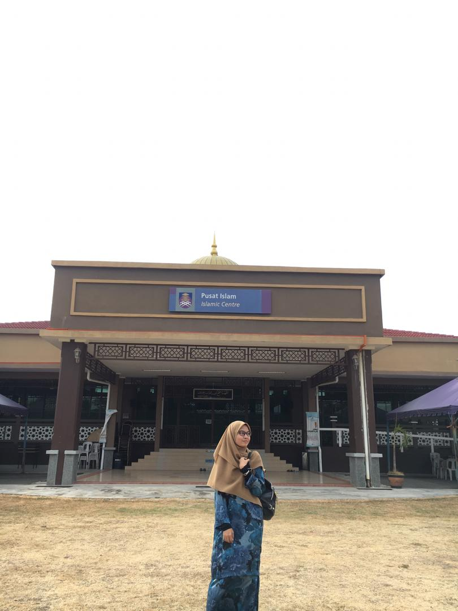
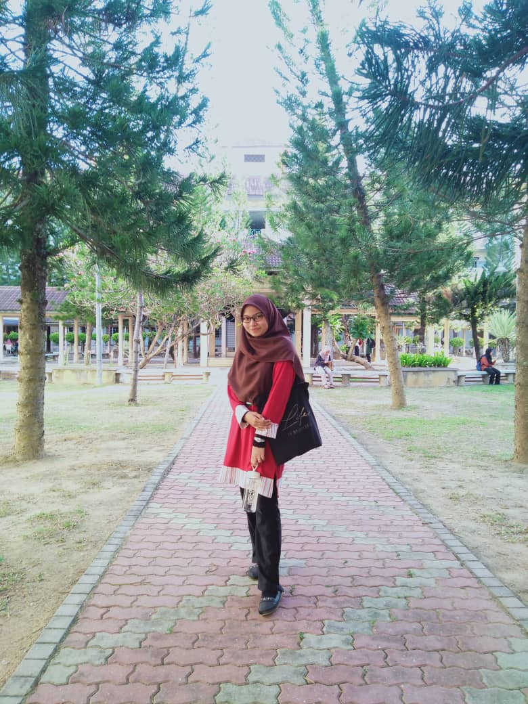
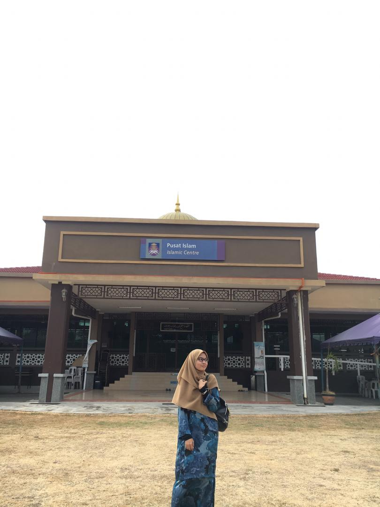
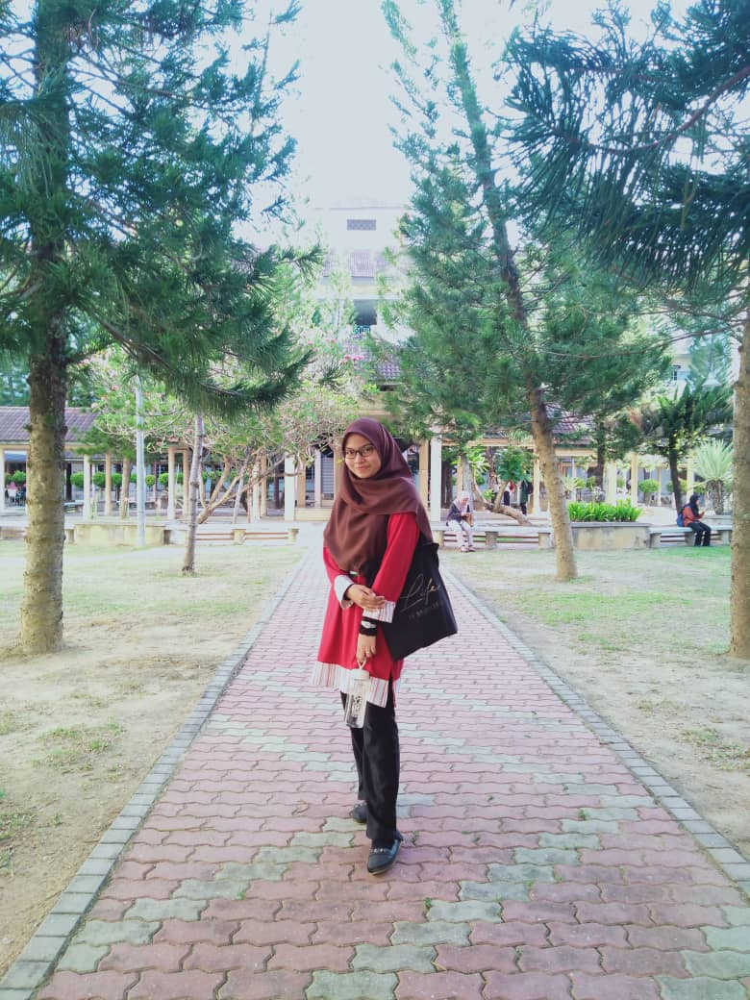
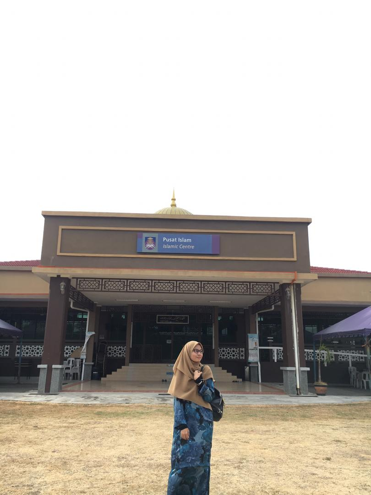
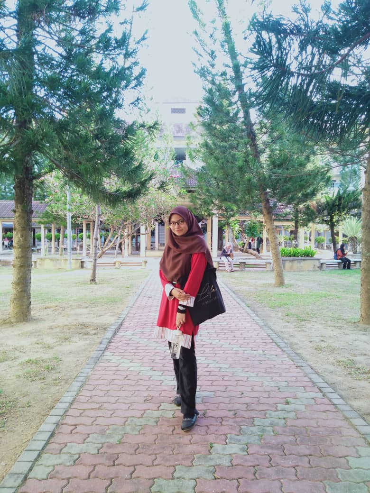

UiTM Kedah was inaugurated on 1 October 1997 by YB Tun Daim Zainuddin, Minister of Finance. It began its first operation in November 1997 with 162 students and 25 administrative staff. In line with the government's goals and aspirations to develop Bumiputra skills in various fields, the university serves as a catalyst in developing the economy and education of the local population, especially in the states of Kedah and the north. The establishment of this campus is based on a master plan that assumes a maximum capacity of 7000 students. The campus covers an area of 350 acres in Mukim Bujang (between Semeling and Merbok), which is located about 14 kilometers from Sungai Petani and was developed based on the approval of the 6th Malaysian Budget Plan with a total of RM38.4 million.
 
First of all, I want to tell you about my life entering UiTM Kedah. I first entered UiTM Kedah on 30 January 2020 and the start of my studies on 10 February 2020 after the Student Destiny Week for UiTM Students. I am actually a Pre -Diploma application student at UiTM Lendu, Melaka and finally I graduated and applied as a UiTM Kedah student. I take the cost of library management under the information management faculty because I am interested in learning and related subjects about libraries. I studied from semester 1 to semester 4 which is the final of the semester. I hope, I can finish this semester and graduate in this diploma to be proud of my parents and my success in the library field.

  
 